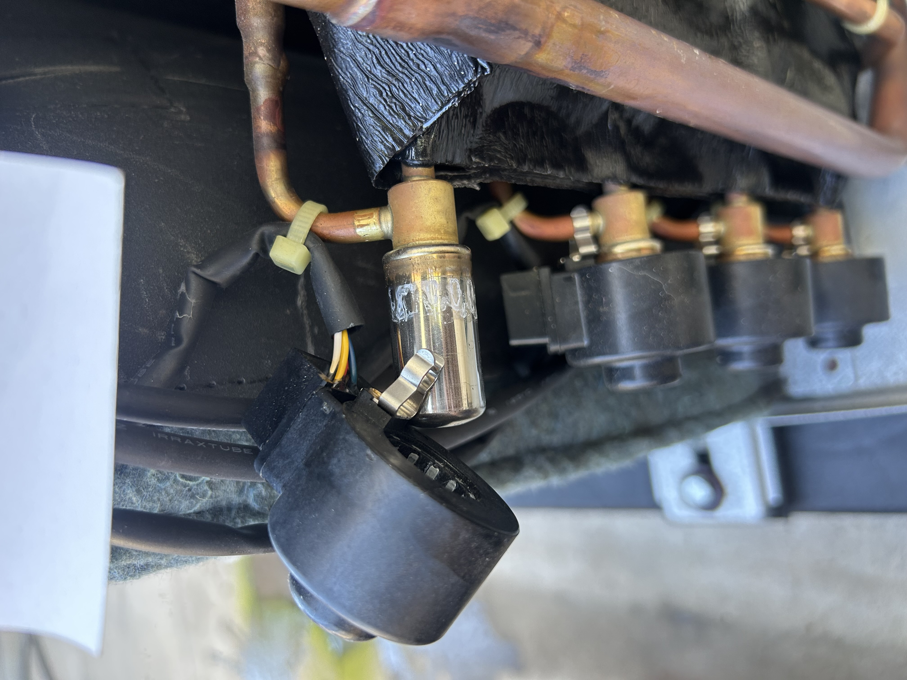
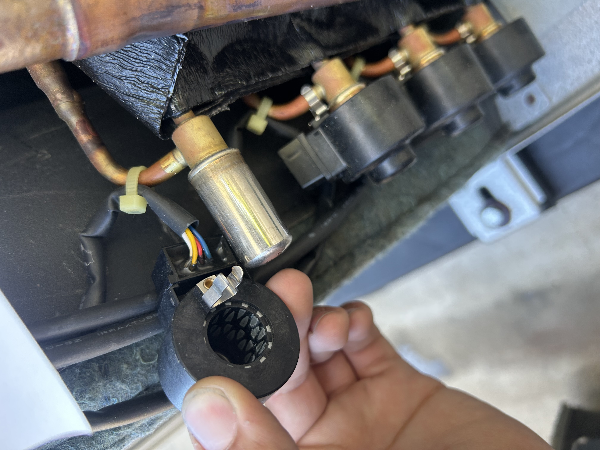
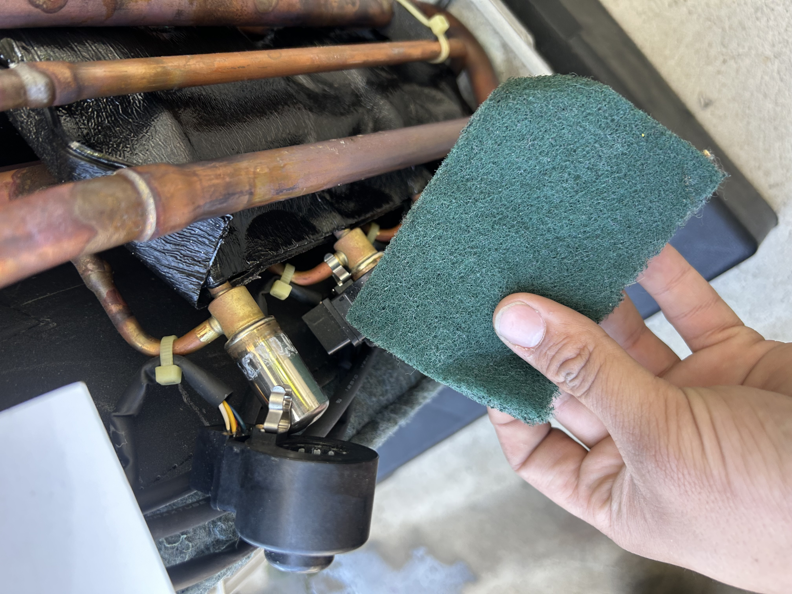

Why it matters
Mitsubishi's ported outdoor units — Smart Multi, City Multi R2 with BC controllers, hybrid VRF branch boxes — distribute refrigerant to multiple indoor heads via a manifold of electronic expansion valves. One EEV per branch. Each one is a brass-and-stainless valve body with a needle inside, driven by a solenoid that slides onto the body from outside the refrigerant circuit. Magnetic coupling through the body wall — no shaft seal, no leak path.
That design has one weakness: the magnetic coupling depends on the solenoid-to-body interface being clean. Outdoor service builds up oxidation, dust, and oil film on the valve body. The solenoid still moves. The needle? Less reliably. Step counts drift. Eventually you get an LD, L5, U2, or U3 on a system that "was fine yesterday." It's not a failed EEV — it's a dirty interface.
The procedure
- Power down the outdoor at the disconnect. Lock out / tag out. You don't want anyone calling the system while you've got solenoids off.
- Pull the solenoid straight up. There's a retainer clip that flexes past the body's lip. Don't yank sideways — you'll crack the housing. Straight-up wiggle.
- Inspect the valve body. The brass-and-stainless cylinder. Looking for tarnish, oxidation, residue, anything that isn't bare metal.
- Hit it with a green Scotch-Brite (3M general-purpose, non-metallic). Light pressure, a few passes around the body until it's bright. Do not use steel wool, sandpaper, or a wire brush — those leave magnetic particles that the solenoid magnets pick up. You'd be creating the exact problem you're trying to prevent.
- Wipe with a clean rag. Get any fibers off. Body should be bright and dry.
- Slide the solenoid back on. Straight down onto the body until you feel/hear the retainer snap. Same orientation it came off — some have a keyway, don't force it.
- Repeat for every EEV in the manifold. 4-8 of them on most ported units. Knock them all out while the panel is open.
- Power back up, run test mode (DIP switches on the inverter board or the maintenance tool — see the Smart Multi charging-port post). Verify all branches are calling. Log the EEV step counts in service mode if you can — that's your baseline for next year.


What NOT to do
- No steel wool, sandpaper, or wire brushes. Steel particles get magnetized by the solenoid. You've just put metal shavings on a moving stepper. The valve will fail faster than it would have dirty.
- No solvents on the body. Anything that could seep past the body wall is contaminating the refrigerant circuit. Dry mechanical only.
- Don't pull the solenoid with the system energized and calling. The driver sends step pulses against an absent body. Best case nothing happens, worst case you damage the inverter board.
- Don't force the solenoid back on rotated 90° off. Some have a keyway. Look at how it came off.
When to do it
- Coastal install — every spring before first cooling call. Salt air is brutal on the bodies.
- Industrial / roadside — annually. Diesel and tire dust film up fast.
- Residential / sheltered — every 2 years, or whenever you have the panel open and see visible film.
- After any LD / L5 / U2 / U3 code that resolved on a step-count reset — clean every interface before you hand the system back.